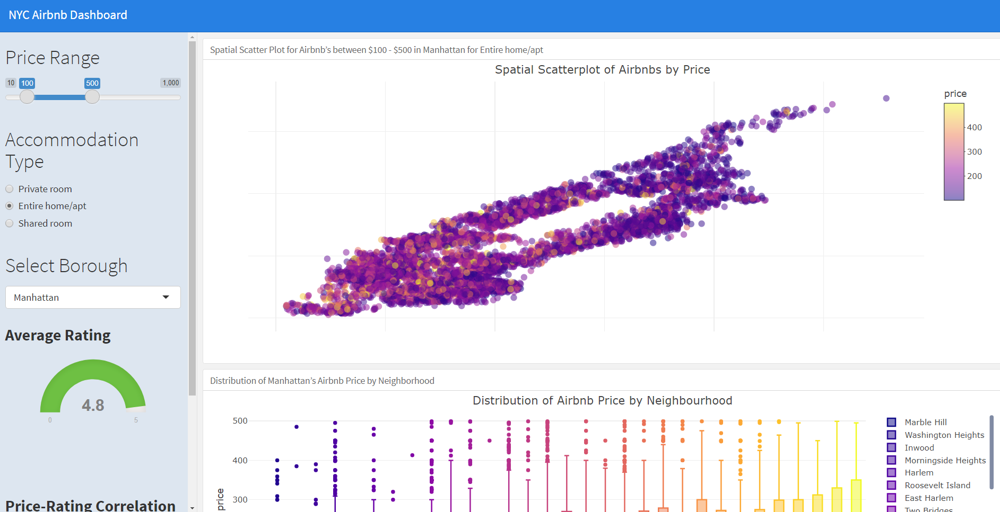
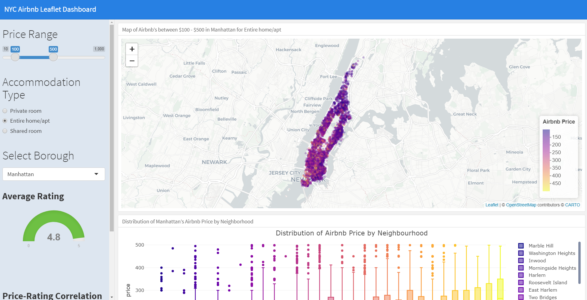
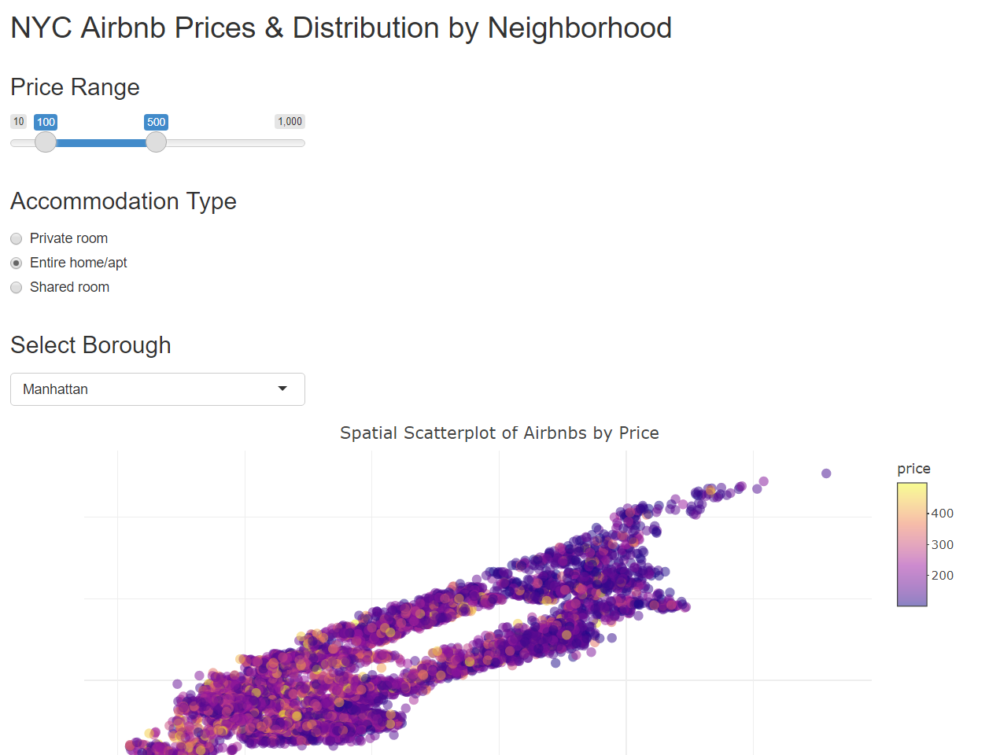

---
title: "Shiny Dashboard"
output:
flexdashboard::flex_dashboard:
orientation: columns
vertical_layout: fill
runtime: shiny
---
#```{r}
#library(shiny)
#```
Column {data-width=650}
-----------------------------------------------------------------------
### Chart A
Column {data-width=350}
-----------------------------------------------------------------------
### Chart B
### Chart CWeek 14: Shiny Apps & Dashboards II
I. Introduction
\(~\) \(~\)
Where we’ve been –
The midterm assessment was designed to evaluate your ‘fundamental’ skills as a data scientist, corresponding to Course Objectives (1)-(4,5) in the syllabus. Those skills break down into –
- Workflow
- .Rprojects + Github, Rmarkdown, best
Rpractices, reproducibility
- .Rprojects + Github, Rmarkdown, best
- Data Wrangling
dplyr,tidyr,forcats,stringr,lubridate- plus iteration with
purrr::mapfamily
- Data Visualization
ggplot2,gt
- Exploratory Data Analysis
- Use the above to read, explore, clean/tidy, prepare for analysis and visualize new data
\(~\) \(~\)
Where we’re going –
As we move forward this semester (today and after Spring Break 3/5 - 3/13), we will continuously utilize and extend these ‘fundamental’ skills to maximize R and Rstudio’s potential for data science and analysis. With the aforementioned fundamentals in hand, we are going to learn how to use these ‘advanced’ communication and analysis tools –
- Enhanced Visualization
- Interactivity w/
ggplotly,reactable - Enhance
gtwithgtExtras(andflextable,ftExtra) - Intro to
flexdashboard
- Interactivity w/
- Websites in R + Github
- Basics, personal webpage
- Websites as analytical display tools
- Embedding
flexdashboard
- Embedding
- Spatial Visualization
- ‘Tidy Maps’ w/
sforsp+tidyverse+ggmapsandggplot2 - Introduction to interactive maps with
ggplotlyand/orleaflet
- ‘Tidy Maps’ w/
- Github Collaboration & Shiny Apps (today)
- Working with others in the same Github repository
- Best practices
- Branching, merging, merge conflicts
- reseting to previous versions
- Developing a Shiny app for data communication
- Developing a Shiny
flexdashboard - Resources for more advanced Shiny
- Working with others in the same Github repository
- Miscellaneous
- package development
- *Working with big data in R
dt_plyr,collapse,h2o,sparklyr - *Working with databases in R
db_plyr - *How to develop a package with Rstudio & Github
- *Webscraping with R
\(~\) \(~\)
So what exactly are we going to do today?
First, Dashboards!
Today we’re going to walk through a demonstration of creating a Shiny flexdashboard with the same NYC Airbnb data we’ve used previously for interactive visualization (plotly), as well as wrapping multiple plots into a single dashboard (flexdashboard). The syntax/layout of the dashboard is exactly the same as before, except now we’ll add runtime: shiny to the yaml to indicate it’s a reactive shiny application and then utilize the same ui.R input and server.R render...({}) output functions to do so (without explicitly defining a ui or server, it’s implied).
In many ways, given our familiarity with plotly and flexdashboards, this avenue for interactive communication of data is ‘easier’ than building a full blown app because it respects the same .RMD flexdashboard structure.
Shiny Apps
Last week I attempted to develop a spatial shiny app with ggplot + ggplotly + tidycensus + ggmap and it turned out to be an inadvisable pursuit for a couple of reasons - (1) Renders way to slowly, (2) plotly syntax is preferable (renders faster) over ggplotly, (3) those specific types of maps have to be built with ggplotly(). This may happen to you as well while you are developing the final product(s) for your final projects. My reccomendations to avoid the slow rendering and unnecessary complications with ggplotly is to simply use leaflet if you’re going to make that type of map – they render almost instantaneously, are very user friendly, and play well with Shiny/dashboards.
In that spirit, today we’ll wrap the dashboard above into a regular shiny application (although I think the dashboard is a better tool for this specific communication tool). In addition, I’ll also show how to embed a leaflet in both.
Good applications supplement good data science.
Bad data science creates bad applications, regardless of how fancy.
\(~\) \(~\)
II. Developing a Shiny Dashboard
Creating an interactive dashboard will require the use of two tools we are now pretty familiar with - shiny and flexdashboard. Now unlike the design of a Shiny apps, Shiny Dashboards will still be generated an .RMD (like the usual flexdashboard) with the only addition to the yaml being runtime: shiny. However, we still need to define the same ui() input and server(input, output) output functions within the document – but we don’t define a ui or server explicitly. Instead, we may simply utilize the associated input/output/render functions within “```{r}” chunks which are implicitly connected to a ui and a server.
Shiny Dashboard Template
So does the order of the input/render functions matter?? Yes! Just like a normal .RMD, it is run line by line or chunk by chunk so inputs have to come before outputs - but the communication between the server and ui is taken care of for you.
NYC Airbnb Shiny Dashboard Example
Today’s dashboard/example can be found on Canvas under Week 14 Lecture materials (nyc_airbnb_shiny_dashboard.RMD). Please download, unzip, and then extract the files inside that now unzipped folder – open an R project and put the .RMD and /data folder there. In class I’m going to walk through the example(s) in depth but the general idea is we (1) Read/tidy the data (non-reactive) and store static variables, (2) Acquire user inputs via slider, buttons, drop-down-menus, etc. (a full list of ui widgets can be found here) and (3) Utilize reactive functions to access inputs and render interactive visualizations.

Some Important Notes
- Layout, structure, syntax, etc. remains the same as a normal
flexdashboard/.RMD - Static operations and object storage should occur first.
- These are things that don’t/won’t change with user input/interaction
- User Inputs ought to be acquired next
- Putting these in a
Column {.sidebar data-width=300}seems like a good stylistic choice (as in the example)
- Putting these in a
- Reactive Operations occur after input but before output
- For example, if you want to access an object in multiple places based on the user input, rather than performing that operation within each of the subsequent reactive functions, you can simply pass that object throughout the document with a user defined reactive function
- ex.
myFunction <- reactive({<your_operations>})
- Reactive Output will occur last (or at least after it’s input has been acquired)
reactive({<function of input>})will allow you to access input variables anywhere in the document- See my inline examples for titles, etc. taken from user input
render...(i.e.renderPlot,renderPlotly, etc.) is a reactive function- Meaning that you can access any user input within the scope of the function
- Can also access the output of any reactive function as well
- i.e. can call
renderPlotly({ myFunction() })from above
- i.e. can call
- It’s difficult to trouble shoot reactive documents and functions
- Can store “inputs” as static variables in the global environment while building dashboard
- Build it one layer at a time (minimize the number of new things that can go wrong)
- Will take some time to become familiar with these new reactive error messages (though a quick google usually helps)
- Start simple, get a minimal working example up and running, and then add to it
- Themes - when using themes from the bootswatch library (css library for your website themes) some formatting may not be respected
- Can download the newest
/bslibwith this codeinstall.packages("remotes"),remotes::install_github("rstudio/bslib") - Can add to the
yamljust like a website (see below)
- Can download the newest
#YAML
---
title: "Shiny Dashboard"
output:
flexdashboard::flex_dashboard:
orientation: columns
vertical_layout: fill
theme:
version: 4 #version of bslib (3 is older, 4 new)
bootswatch: <theme name> #flatly, darkly, etc.
runtime: shiny
---Leaflet & Shiny Dashboard
Leaflet & Shiny - If you intend to embed a leaflet app within a Shiny app or dashboard, this Using Leaflet with Shiny Rstudio website is an awesome resource to get you up and running.
NYC Airbnb Shiny Dashboard Example
While the dashboard above is pretty good, it’d be awesome to have a leaflet instead of a plotly spatial scatterplot (w/no map features due to ggplotly/geom_sf/ggmap bugs with shiny). Luckily, shiny can handle leaflets just fine with renderLeaflet and leafletOutput (the second is for Shiny apps only). This dashboard/example can also be found on Canvas under Week 14 Lecture materials (nyc_airbnb_shiny_dashboard_leaflet.RMD)

III. Developing a Shiny App (cont.)
Today we will mostly be walking through a reasonable workflow for developing Shiny applications in a clear, orderly fashion. To do so, please go to Canvas Week 14 Lecture Materials and download the associated .zip file. Please unzip and extract the contents into an .Rproject. When opening the project in your local directory, instead of just clicking the generic New Project at the top of the drop down, click the Shiny App third from the top. This will initilize a project that expects a Shiny app, comes with that same pre-built tutorial, etc. Note - don’t put Shiny app and Shiny dashboard in the same directory/project or in nested directories/projects (why?), ensure that the directories are distinct and disjoint.
Files, Sourcing, and Functions
Now, unlike the usual .RMD files we’re used to working with and knitting, for Shiny apps we’re actually only going to use .R scripts. We’ve been using .RMD’s both to generate static/interactive documents and ensure reproducibility of our work. When working with .R scripts, it’s a good idea to periodically clear your global environment (broom icon) and rerun your script to ensure it’s reproducible.
When developing a Shiny app or any other more complicated workflow, application, etc., it is a good idea to separate distinct project/app functions and operations into their own distinct .R files with a /src folder or other file structure outside the root directory. These can be data acquisition steps, data wrangling, visulazation, user functions, etc. which can called/run via the ui.R, server.R, or other ‘meta’-script via source(<my_file>.R) (render() if .RMD). Why might this be a good idea?
Hint - Think about Github collaboration, file structure, and reactive programming
NYC Airbnb Example
From a raw coding perspective, there aren’t many differences between the dashboard above and a ‘regular’ shiny app; almost all of the important input, reactive, and render functions are identical. However, structurally they are very different in design, file-structure, and most importantly, explicit interaction between the ui & server.
Reminder
ui.R
Here we define the layout, structure, user inputs, and output display.
server.R
As a reactive function of input and output, this is where are the computation, visualization, and heavy lifting take place. In this example, we take in the user inputs from the ui.R and use them to generate the desired visualizations and outputs – sending them back to the ui.R for display/interaction.
All that really means is within the ui.R, you need to include the same inputs while also explicitly displaying the output from the server. And a small technical detail is that different input functions or display functions need to be seperated by comma. Likewise, within the server all reactive and render functions operate the same, however you have to explicitly store output objects you’d like to be passed back to the ui.R.

V. Conclusion & Resources
For the purposes of this course, and for most of the applications we are all likely to need Shiny as a communication tool for in the future, I think the Shiny Dashboard is probably the way to go. If you’re already familiar with .RMD and flexdashboard, it’s an easier, better-looking way to maximize R/Shiny as a communication tool. However, it’s important to know both since on the backend, Shiny Dashboards are still running the ui.R \(\longleftrightarrow\) server.R connection under the hood.
Publishing Shiny Apps & Dashboards (to include in your website)
Hosting a Shiny App or dashboard on your website (indirectly) can be down pretty easily with shinyapp.io. Unfortunately, you can’t share or display these reactive tools like normal – in order for something to be reactive in the R language it has to be hosted on a server (not the script, an actual server) which supports R (i.e. can run it in the background to host your app).
Unfortunately Github and consequently Github Pages does no support R this way, so you can’t simply embed it in your website like a dashboard or leaflet (why?)
But that’s okay! You can still display your Shiny apps on your website or elsewhere, you just need to host it elsewhere.
Here is a shinyapps.io tutorial to do just that! Following the directions will allow you to deploy a Shiny app on your group’s or personal website.
Alternatively, here is an another step-by-step screenshot guide for setting up and hosting with shinyapps.io.
Resources
- Shiny with Flexdashboard tutorial vignette/tutorial
- Examples of Shiny Dashboards
- shinyapps.io set up
- Here is an awesome gallery of Shiny apps for motivation, inspiration, or just awe.
- Here is Rstudio’s official Shiny App tutorial before next week’s class
- Here is a slightly shorter, interactive tutorial from Dean Attali
\(~\) \(~\)
V. Activity
Activity 1. Edit the Shiny Dashboard
Similarly to Week 7 Lecture’s Activity,
For today’s activity, please
- Start an .Rproject in the folder of your choice
- Download the NYC shiny dashboard .zip from Canvas
- Unzip and put the
.RMDand/datafolde in that project - Click
Run Documentat the top (whereKnitusually is) to run the app and check it out on your own - Then, alter the (3) visualization below (as directed)
(1) Spatial Scatterplot/Leaflet by Rating
Instead of looking at price, alter the scatter plot/leaflet to be coloured by rating.
(2) Distribution of Rating by Neighbourhood
Instead of looking at the distribution of prices, let’s investigate the distribution of ratings by neighbourhood instead. Fix the title(s) accordingly.
(3) Number of Avg. Listings per Month by Neighborhood
\(~\) \(~\)
VI. Next Week
- I will schedule group meetings (2) prior to the final project due date based on your groups submitted availability.
- Meeting 1 will be next week.
- You should have a reasonable amount of EDA done prior to the meeting
- All this means is you’ve evaluated the validity of the data to answer your questions of interest
- You’ve inspected the data for issues with cleaning or tidying
- It would be good to have some very basic, preliminary (probably static) visualizations
- Start thinking about/laying the ground work for more advanced applications
- We’re going to cover R Package Development via github next week (and maybe some other miscellaneous topics
- This will allow people not just to see your work on github, but download it directly and run your examples/code/etc.